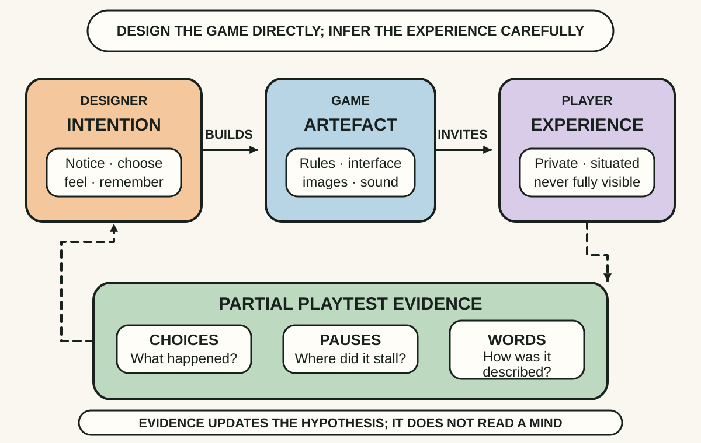
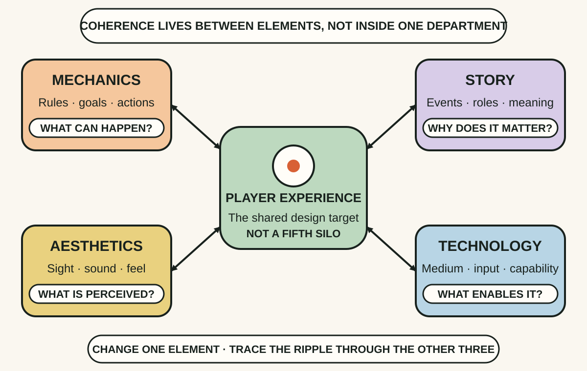
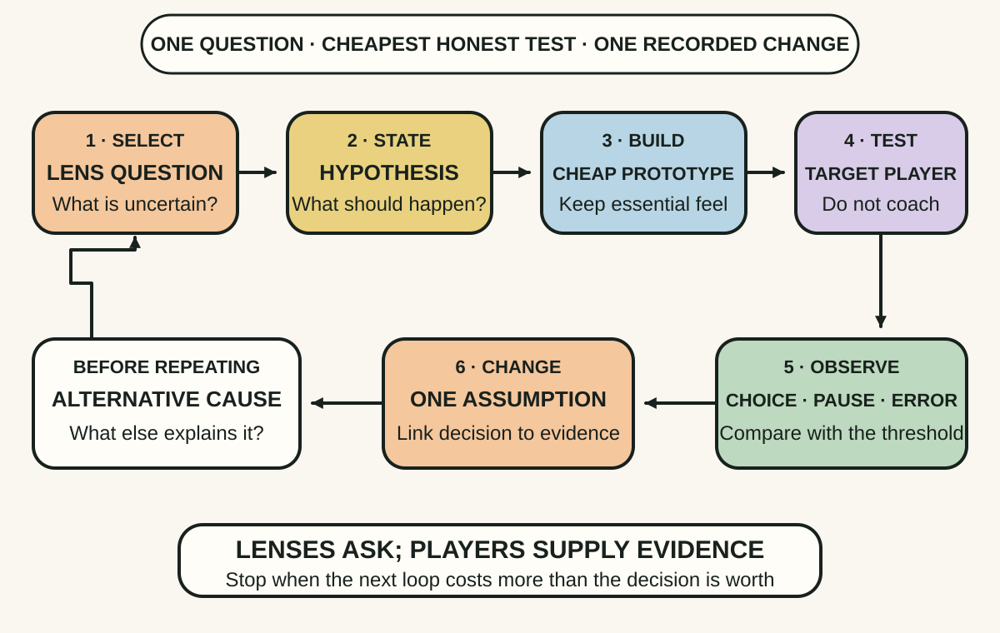

Daily lesson ·
The Art of Game Design: A Book of Lenses
Design the experience rather than the feature list: state what the player should feel and do, keep mechanics, story, aesthetics and technology coherent, then use focused prototypes and playtests to replace attachment with evidence.
Idea 1
Design an experience you can only observe indirectly #
The idea
Schell starts by separating the game from the experience. A designer can create rules, interfaces, images, sounds and events, but the experience arises in the player's mind. The intended feeling is therefore the design goal, while the game is the constructed means used to invite it.
That gap makes listening and observation essential. The designer's own excitement, explanation or intention cannot establish what another player experiences. A prototype and playtest provide indirect evidence through choices, hesitation, attention, emotion and later description, even though none of those signals reveals the whole inner experience.

Why it matters
Teams can implement every requested feature and still produce confusion, boredom or pressure because the specification described the artefact rather than the human experience it was meant to create.
Apply it today
Choose one interaction you are designing. Complete: The player should notice ___, choose ___ and feel ___ because ___.
Add one observable signal for each blank. Replace any signal that merely asks whether the player agrees with your description.
Caveat or failure mode
One player's action or comment is not a transparent readout of experience. People differ by skill, culture, context, access needs and expectations, while observation can change behaviour. Use several forms of evidence, sample the intended audience and preserve outliers that may expose harm or exclusion rather than averaging them away.
Idea 2
Make the four elements support one experience #
The idea
Schell's elemental tetrad names four interdependent parts of a game: mechanics are its rules and procedures; story is the sequence of events; aesthetics are the sensory qualities presented to the player; and technology is the medium and capability that make the game possible.
The point is not to divide the budget evenly or finish each part separately. A change in one element alters the possibilities and constraints of the others. Strong design makes the four elements support the same intended experience instead of letting a mechanic, narrative promise, visual signal or platform capability quietly contradict the rest.

Why it matters
A technically impressive feature can fail when the controls resist the mechanic, the visual language implies the wrong action or the story promises agency that the rules do not permit.
Apply it today
Take one proposed game change and place it under mechanics, story, aesthetics or technology.
Write one consequence for each of the other three elements. Mark the first contradiction with the intended player experience and revise the smallest element that can restore coherence.
Caveat or failure mode
The tetrad is a useful map, not a complete theory of production or player welfare. It does not automatically include accessibility, community norms, business models, labour, ethics or live operations. Other lenses and affected people must make those concerns visible, and internal coherence still does not prove that the experience is enjoyable or worthwhile.
Idea 3
Iterate with focused questions and playtest evidence #
The idea
Schell presents iteration as the route by which a game improves: identify the problem, generate possible solutions, choose one, build enough to test it, evaluate the result and repeat. A prototype should answer an important design question as cheaply and quickly as its essential experience allows.
The book's lenses are sets of questions that redirect attention to a particular aspect of the game, such as challenge, choice, fairness or the player. They are prompts rather than laws. Playtesting closes the loop by exposing how real players act, but useful tests need a purpose, a relevant audience and observation that does not coach the desired result.

Why it matters
Teams become attached to features as implementation cost rises. Early, question-led tests make disagreement cheaper and convert taste arguments into evidence about what players actually notice and choose.
Apply it today
Choose one disputed design assumption and turn it into a question a ten-minute prototype could answer, such as whether players notice a risk before choosing it.
Decide the observation and change threshold before testing. Afterward, record what happened, one alternative explanation and the single next change.
Caveat or failure mode
Iteration can become random thrashing when the question, audience or decision rule keeps changing. A crude prototype can also remove the timing, feel, social context or accessibility support essential to the real experience. Test the riskiest assumption at sufficient fidelity, sample beyond the design team and stop when further cycles are less valuable than shipping or learning in use.
Knowledge check · 6 questions
Learning check
Answer all 6, then check your answers. Your first result stays in this browser, and each explanation appears after you check. A 3-question review can appear on the homepage from tomorrow.
6 questions not yet answered.
Today's experiment · 10 minutes
Run one lens-led paper playtest
- Choose one tiny interaction and write the intended player experience in one sentence.
- Pick one lens question, then draw a two-choice paper prototype that exposes the uncertain assumption.
- Before testing, write the one action or pause that would challenge your hypothesis.
- Give the prototype to one available person without explaining the intended choice. Ask them to think aloud while making one decision.
- Record the action, one alternative explanation and one change you would test next. If no person is available, schedule the test rather than role-playing their evidence.
Observable result: You finish with one explicit experience hypothesis, one observed or scheduled player decision and one evidence-linked change instead of an untested preference.
Retrieval practice
Spaced recall
- From Working Effectively with Legacy Code: how is a playtest like a characterization test, and why does one observed behaviour not prove the design is correct?
- From Superforecasting: what reference class could help you judge whether one playtest result is surprising before you call the experience unique?
Verification
Source notes
These links support the attributed claims and edition details; applications and extensions are labelled in the lesson.
- Routledge: The Art of Game Design, third edition
- Schell Games: official Book of Lenses overview
- Schell Games: third-edition content and 116-lens ecosystem
- Google Books: first-edition record, contents and chapter structure
- American Journal of Play: critical review of the framework and elemental tetrad
One-sentence takeaway